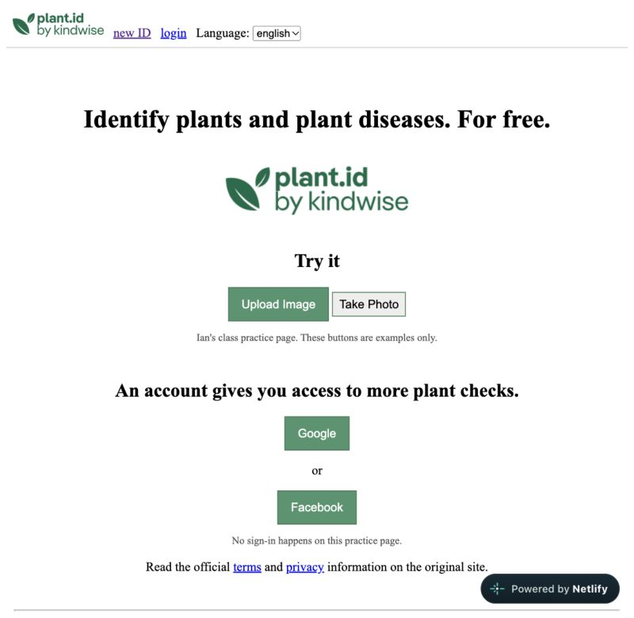

WEB DEVELOPMENT / CASE STUDY STARTER
Plant API landing page
A beginner recreation of the plant.id page structure, practicing images, buttons, and layout. This version does not connect to a working API.
HTML · CSS · Images · Netlify

Project overview
This page is a starter for the project’s process and reflections. The website preview is real; the detailed case study is still to be written.
Needs assessment specifications
Add the intended audience, required features, and constraints.
Problem statement
Explain the problem the page was meant to solve.
Approach
Describe the steps taken to structure and style the page.
Materials list
HTML, CSS, a code editor, a browser, and website hosting. Add other tools actually used.
2D design
Add the original page sketch or Figma layout.
3D design
Not applicable to this two-dimensional website.
Farm plan
Not applicable to this web project. See the agriculture project’s farm plan starter for that work.
Standard Operating Procedure (SOP)
Add repeatable website update instructions. The separate agriculture SOP starter belongs to the growing project.
Project analysis
Add what was tested and what the results showed.
Challenges
Add a specific difficulty encountered.
Solutions
Explain how that difficulty was addressed.
Conclusion
Add the main takeaway and what to improve next.
Visuals
The project preview above is the starting visual. Add process screenshots and captions here.